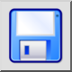

Saglabāt
Rīkjosla / ikona:


Izvēlne: Faili > Saglabāt
Īsais ceļvedis: Ctrl+S (Mac: ⌘S)
Komandas: save
Rīkjosla / ikona:


Šī komanda saglabā pašreizējo rasējumu tajā pašā failā, no kura tas tika ielādēts. Ja vēlaties saglabāt jaunizveidotu rasējumu vai saglabāt pašreizējo rasējumu jaunā failā, tā vietā izmantojiet izvēlni File - Save As. Tad jums tiks jautāts faila nosaukums pirms rasējuma saglabāšanas.